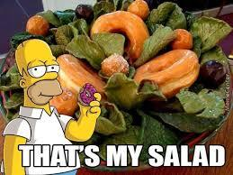

Recipie book
- Home
- Recipie
- Contributions
- Tips
- About
Carrot and Kale salad
Subbmitted by Micheal jackson

This salad is a great spicy treat that is made out of grass and eaten by the grass people of the grasslands of the grass country callend grassland
Ingrediants
- Indian masala
- Magic powder
- four drops of sigma fluid
- zero drops of beta fluid
- rotten flesh from minecraft
- pikachu's hair
- 1 box of viks vapo rub
Instructions
- use a witch pot and mix all the ingrediants together and mke sure to say the following line (in the audio file)